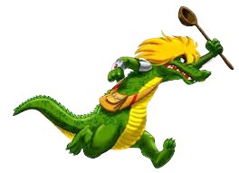

Cuca
Qual é a história da Cuca?
A Cuca é uma personagem do folclore brasileiro. Trata-se de uma bruxa velha com
aparência assustadora que possui cabeça de jacaré e unhas imensas. Dona de uma voz
assustadora, a Cuca rapta as crianças desobedientes.
Reza a lenda que a bruxa Cuca dorme uma vez a cada sete anos.

Curiosidade
Por conta da contribuição africana na formação cultural brasileira, a Cuca era tida como uma negra velha.
De acordo com o Câmara Cascudo, no idioma mbunda, o termo cuca ou cuco significa “avô” ou “avó”.
Por conta disso, acreditava-se que a Cuca era uma negra velha.